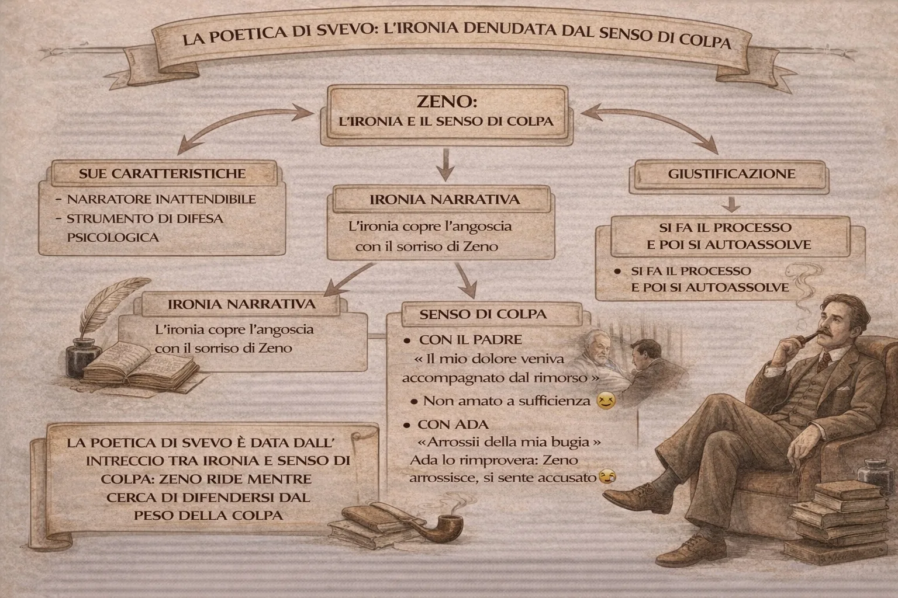

La poetica di Svevo: ironia e senso di colpa
La poetica di Italo Svevo nella Coscienza di Zeno ruota attorno a una figura nuova nella letteratura europea: l’inetto. Zeno Cosini non è un eroe, ma un uomo incerto, contraddittorio, spesso incapace di agire con decisione. Tuttavia, ciò che rende davvero originale questo personaggio non è soltanto la sua debolezza, ma il modo in cui egli racconta se stesso.
Il racconto di Zeno è attraversato da una continua ironia. Egli osserva la propria vita con distacco, commenta i propri errori e li trasforma spesso in episodi quasi comici. Ma questa ironia non è mai pura leggerezza. Sotto di essa agisce continuamente un altro sentimento: il senso di colpa.
Nodi della lezione
- Narratore inattendibile
- Ironia come difesa
- Senso di colpa come verità nascosta
1. Introduzione
La poetica di Italo Svevo nella Coscienza di Zeno ruota attorno a una figura nuova nella letteratura europea: l’inetto. Zeno Cosini non è un eroe, ma un uomo incerto, contraddittorio, spesso incapace di agire con decisione. Tuttavia, ciò che rende davvero originale questo personaggio non è soltanto la sua debolezza, ma il modo in cui egli racconta se stesso.
Il racconto di Zeno è attraversato da una continua ironia. Egli osserva la propria vita con distacco, commenta i propri errori e li trasforma spesso in episodi quasi comici. Ma questa ironia non è mai pura leggerezza. Sotto di essa agisce continuamente un altro sentimento: il senso di colpa.
La vera poetica sveviana nasce proprio da questo intreccio: l’ironia come forma di difesa e il senso di colpa come verità nascosta della coscienza.
2. Il narratore inattendibile
Il romanzo si apre con la prefazione del dottor S., lo psicoanalista di Zeno, che avverte il lettore che il protagonista non è un narratore completamente affidabile. Nelle sue memorie si trovano insieme verità e menzogne.
Questo significa che il racconto di Zeno non è una semplice cronaca dei fatti, ma una continua interpretazione di se stesso. Egli ricorda, commenta, modifica, giustifica. Il romanzo diventa così il luogo di un’autodifesa permanente.
La memoria non è neutrale: è uno strumento con cui Zeno tenta di spiegare le proprie debolezze e di attenuare la responsabilità delle sue azioni.
3. L’ironia come difesa
Una delle caratteristiche principali del racconto di Zeno è l’ironia. Egli guarda la propria vita quasi come se fosse uno spettacolo e spesso ridimensiona anche gli episodi più seri.
Questa ironia però non nasce da serenità o superiorità. È piuttosto un modo per sopportare la propria fragilità. Zeno trasforma le proprie sconfitte in racconti ironici per non essere schiacciato dal giudizio morale.
Quando parla delle sue debolezze – per esempio l’incapacità di smettere di fumare – Zeno cerca sempre una spiegazione, una giustificazione, un’interpretazione che renda meno grave la sua mancanza di volontà.
In questo modo l’ironia diventa una strategia psicologica: permette al protagonista di prendere distanza da se stesso e di evitare una condanna troppo severa.
4. Il senso di colpa
Sotto la superficie ironica del racconto emerge però continuamente il senso di colpa. Zeno non riesce mai a liberarsi completamente dal sospetto di aver sbagliato, di essere stato egoista o di non aver agito nel modo giusto.
Questo sentimento appare con particolare forza nel rapporto con il padre e, soprattutto, nel rapporto con Ada.
Il senso di colpa verso il padre
La scena della morte del padre è uno dei momenti più drammatici del romanzo. Zeno prova dolore, ma nello stesso tempo avverte un profondo rimorso. La sua coscienza interpreta ogni gesto come una possibile colpa.
Questo episodio mostra quanto la coscienza di Zeno sia tormentata: egli non riesce mai a essere sicuro della propria innocenza.
Il senso di colpa verso Ada
Il rapporto con Ada rappresenta forse il punto più evidente di questo meccanismo psicologico. Ada è la donna che Zeno ama, ma che non riuscirà mai a conquistare.
Dopo la morte di Guido, Ada pronuncia parole che restano impresse nella coscienza di Zeno e che egli continuerà a ricordare per tutta la vita.
Queste parole diventano per lui una specie di accusa morale. Zeno sente il bisogno di difendersi interiormente e di convincersi di non meritare quel rimprovero.
Il fatto stesso che continui a ripensare a quell’episodio dimostra quanto il senso di colpa sia radicato nella sua coscienza.
5. Il meccanismo della giustificazione
Nel romanzo compare spesso un meccanismo psicologico molto preciso: prima Zeno racconta un fatto, poi cerca di spiegarlo, infine tenta di giustificarsi.
Questo schema si ripete continuamente:
- accade un evento;
2. Zeno lo ricorda;
- lo interpreta;
- 4. cerca una spiegazione che riduca la sua responsabilità.
Il romanzo diventa così una sorta di processo interiore in cui Zeno è contemporaneamente imputato, testimone e avvocato difensore.
6. La vera poetica di Svevo
Da tutto questo emerge una concezione nuova del romanzo. Per Svevo la verità non è mai semplice né oggettiva. La realtà è sempre filtrata dalla coscienza, dalla memoria e dall’inconscio.
L’ironia di Zeno rappresenta la superficie del racconto, ma sotto questa superficie agisce una continua tensione morale.
La poetica di Svevo si fonda quindi su tre elementi principali:
- la coscienza come luogo di conflitto;
- l’ironia come forma di difesa;
- il senso di colpa come verità profonda dell’individuo.
7. Conclusione
La grande novità della Coscienza di Zeno sta nel fatto che il romanzo non racconta semplicemente una storia, ma mette in scena il funzionamento della coscienza umana.
Zeno non è un personaggio che comprende pienamente se stesso. Al contrario, vive in un continuo oscillare tra ironia e colpa, tra autoanalisi e autoassoluzione.
L’ironia gli permette di raccontare la propria vita senza disperare; il senso di colpa gli impedisce di sentirsi davvero innocente.
Proprio in questo equilibrio instabile tra difesa e verità nasce la poetica di Svevo: una letteratura che non cerca eroi, ma uomini fragili, contraddittori e profondamente umani.
Come leggere questa pagina
Prima guarda la mappa. Poi usa la sintesi per fissare i passaggi logici. Solo dopo apri la lezione completa: così il testo non ti cade addosso come un blocco unico, ma come sviluppo di un ordine già visto.
Indice rapido
Su iPad e iPhone: condividi la pagina e scegli “Aggiungi a Home”. Su Android: usa “Installa app”.